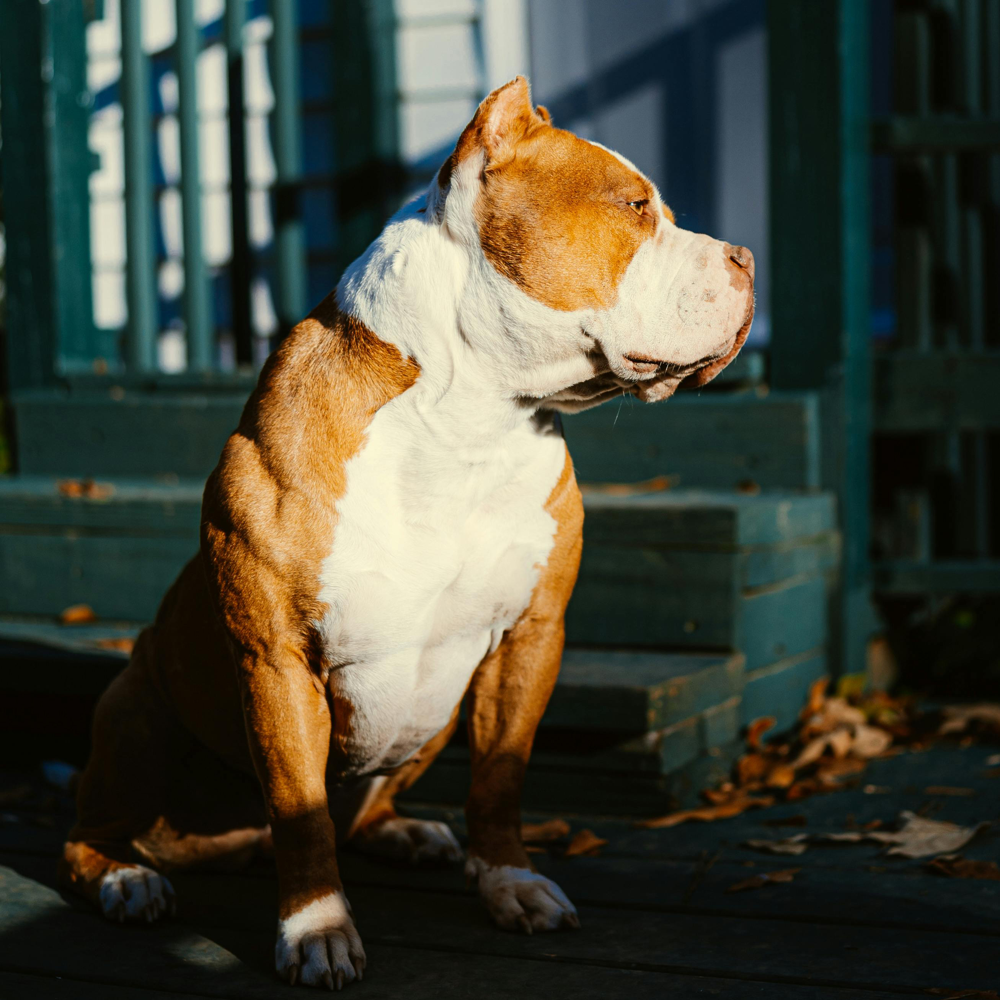

No Pittie Left Behind
Perfectly Paired Pitties (P3), a volunteer-run 501c3, is a united rescue effort to both save pitties and support veterans.
At P3, we LOVE Pitties & we LOVE & RESPECT our Veterans! 2,800 Pitties & Pittie mixes and blockheaded dogs are euthanized in overcrowded shelters every day, over 1 million every year. 22 Veterans commit suicide every day, that’s 8,030 lost per year. At P3, we find these numbers unacceptable!
P3 was created in March of 2024 with the goal of rescuing Pit Bulls and Pit Bull type dogs from overcrowded shelters where they are at risk of euthanasia and providing the necessary training for them to provide emotional support, nightmare alerts, and pressure therapy during episodes of anxiety and stress so they can be paired with a Veteran struggling with PTSD reducing the risk of Veteran suicide.
While we support our Veterans, our rescue is not limited to the placement of service dogs for Veterans only. Our Veterans program is only one aspect of what we do. We want to help EVERY pittie find the perfect furever family!
